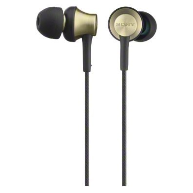

Ростов-на-Дону
Магазины
Доставка

Описание товара
Sony MDR-EX650AP – это наушники с нестандартной конструкцией вкладышей.
Такая форма наушников обуславливает желание исключить наложения звуков друг на друга.
Рифленый шнур позволит избежать лишней нервотрепки с запутавшимся шнуром.
Характеристики товара